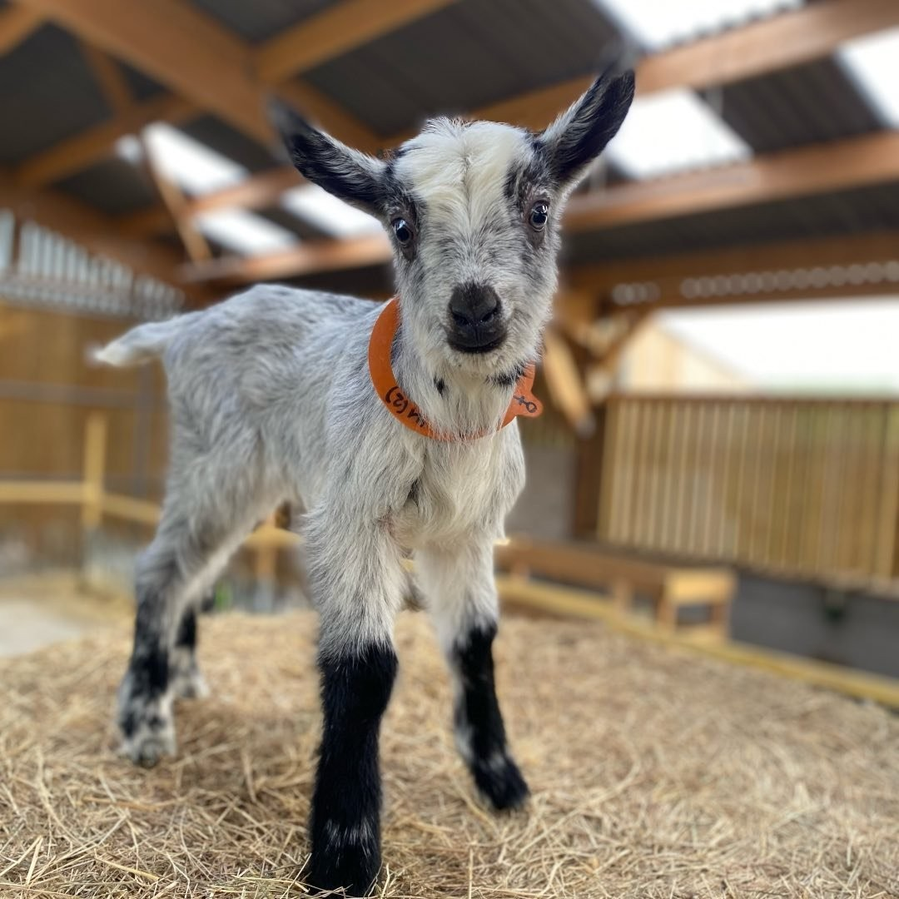
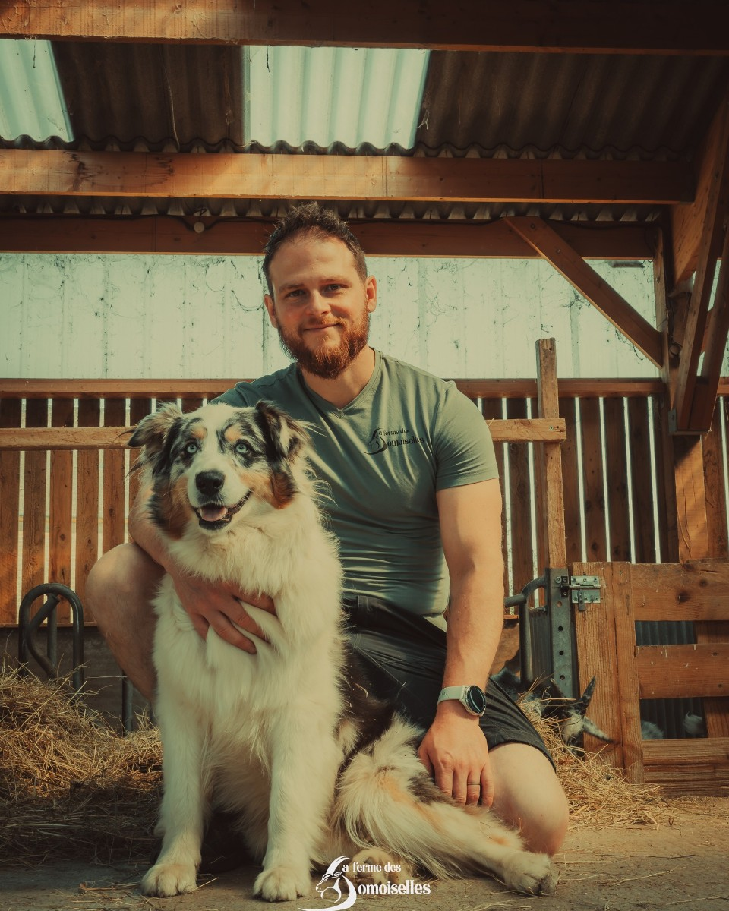
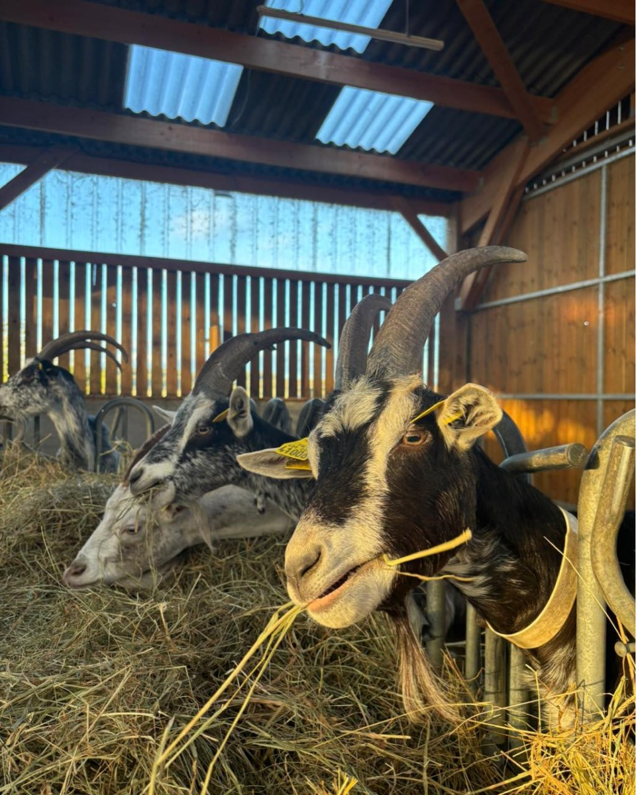
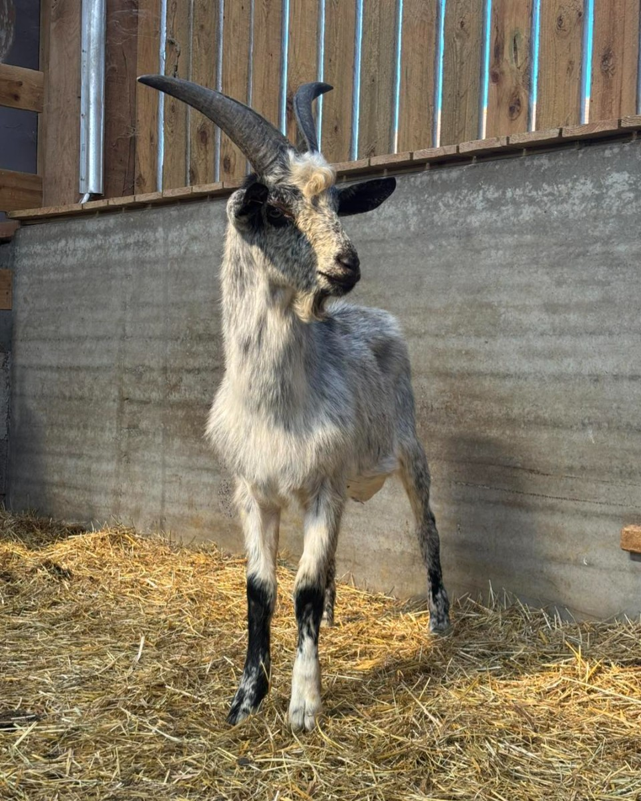
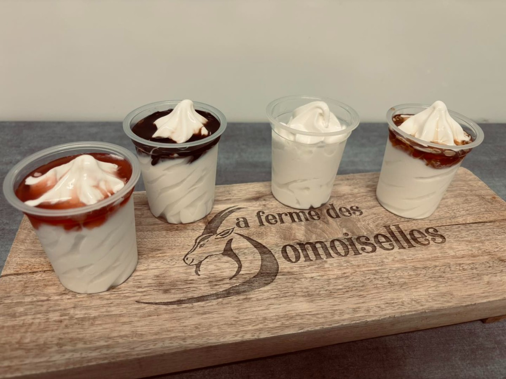
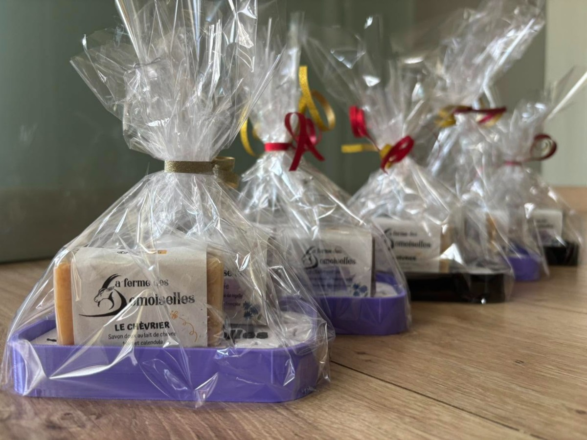
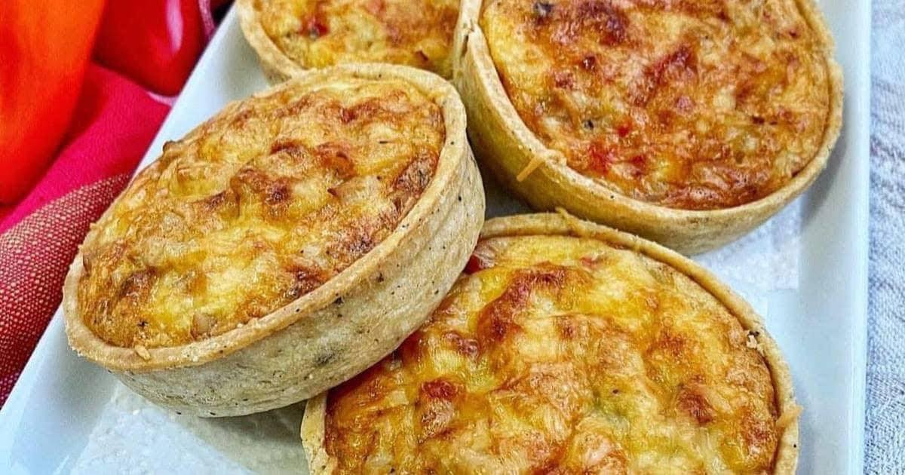
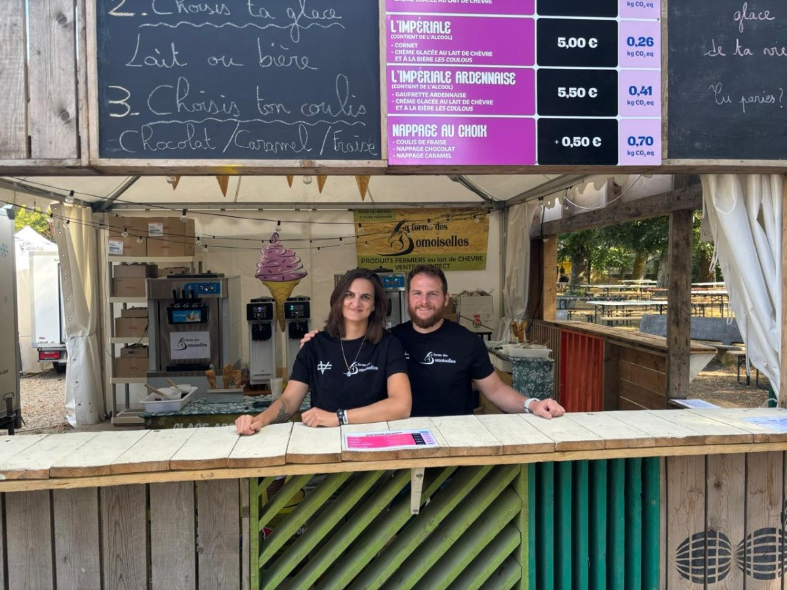
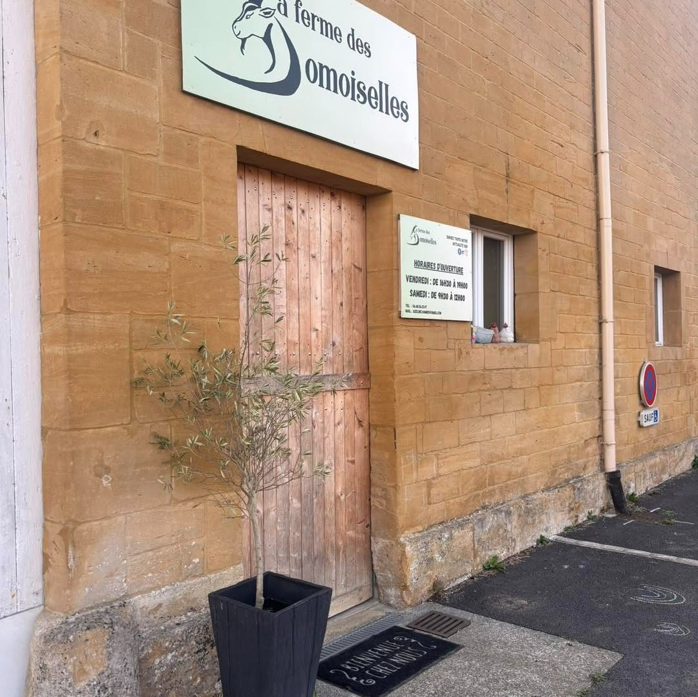

Les fromages
Fromages de chèvre fermiers, frais et affinés, fabriqués avec le lait des Domoiselles.
Ferme laitière · Dom-le-Mesnil (08)
Azéline et Johan élèvent une quarantaine de chèvres de Lorraine au bord de la route nationale, à Dom-le-Mesnil. Le lait ne quitte pas la ferme : il devient fromage, yaourt et glace dans l'atelier, à quelques mètres de la chèvrerie. Vente directe au magasin, le vendredi et le samedi matin.

La ferme
Azéline et Johan ont créé la ferme des Domoiselles en 2020. Johan était militaire avant de devenir éleveur de chèvres. Ensemble, ils ont monté la chèvrerie, l'atelier de transformation et le magasin de vente directe, à Dom-le-Mesnil.
Depuis 2022, la ferme est ouverte au public. Les produits partent au magasin, mais aussi chez les artisans des environs : plusieurs boulangeries et pizzerias de la région travaillent le fromage de la ferme. La ferme est adhérente de la marque collective Ardennes de France.
C'est une race à faible effectif, longtemps menacée. Azéline et Johan l'ont choisie pour sa génétique laitière, sa rusticité et son adaptation au climat ardennais. C'est une chèvre d'ici, qui tient dehors.



Nos produits
Le lait est travaillé à la ferme, dans l'atelier attenant à la chèvrerie. Rien n'est acheté ailleurs.
Fromages de chèvre fermiers, frais et affinés, fabriqués avec le lait des Domoiselles.
Yaourts au lait de chèvre, nature ou garnis d'un coulis, en pots individuels.
Glace au lait de chèvre, fabriquée à la ferme. On la retrouve aussi sur le stand, lors des manifestations ardennaises.
Savon doux au lait de chèvre, miel et calendula, fabriqué pour la ferme.
Assortiments emballés, préparés à la ferme pour offrir : fromage, savon et produits de la maison.
Tartelettes au chèvre chaud, proposées certains week-ends au magasin.
Les produits laitiers de la ferme vont de 3 € à 10 €. Paiement en espèces, par chèque ou par carte bancaire.
De 3 € à 10 €



Les visites
La ferme est ouverte au public depuis 2022. Les visites guidées se font toute l'année pour les familles, et sur mesure pour les groupes et les structures professionnelles.
Venir au magasin
